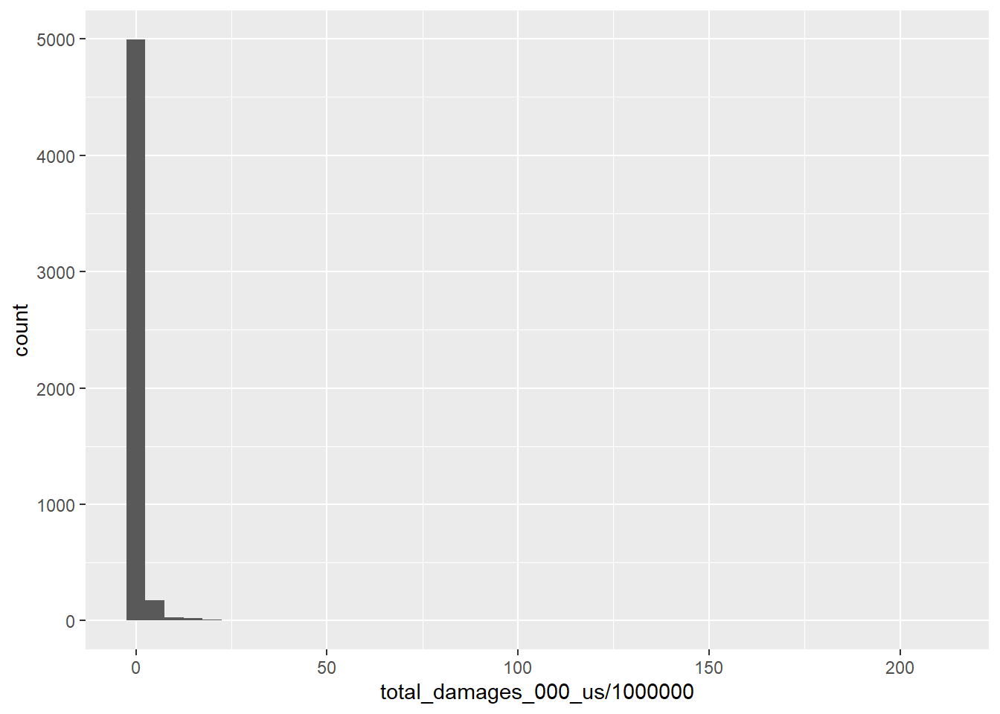
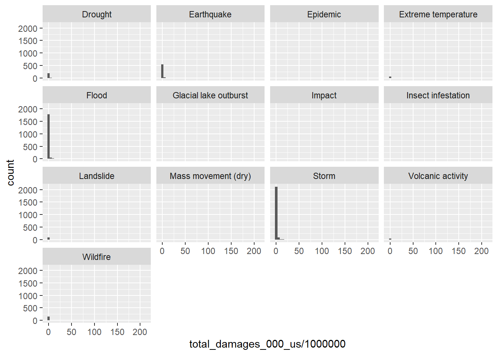
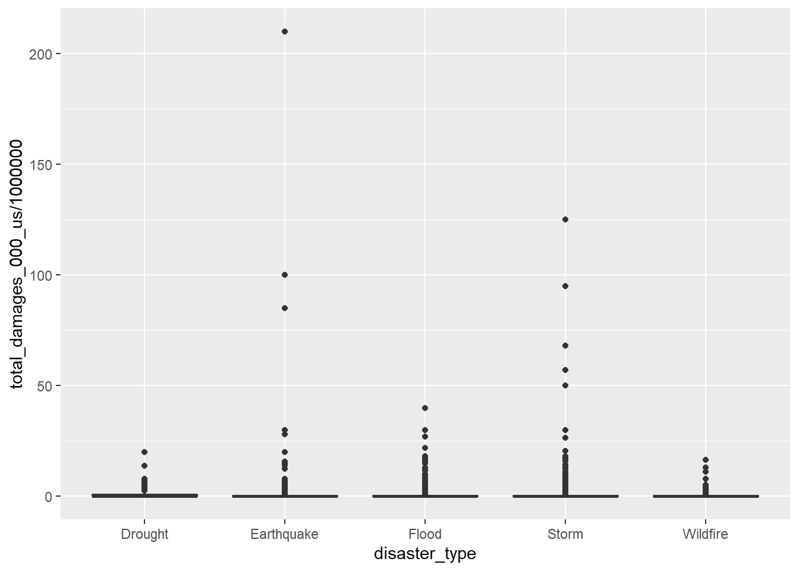
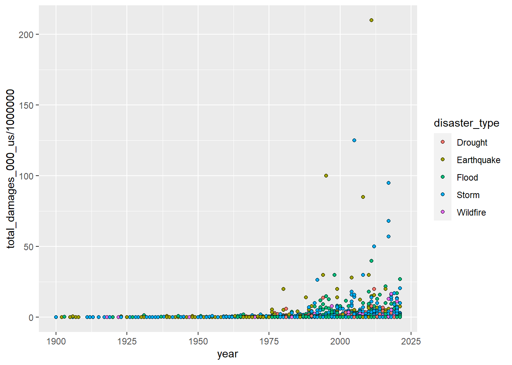

Learning Objectives
After completing this tutorial you should be able to
Open a new Rmd file using File > New File > R Markdown or the drop down menu of the green plus button below File and save it in your Exploratory Analysis project directory. That’s right - training wheels are off … you will need to add all of your own headers, plain text etc. Set up the YAML header so that you are the author and when knitted the date will reflect the date of the creation of the document and create settings for your document in the setup chunk.
Remember, you should always check your html document after it knits to make sure that everything has converted as expected, including your figures, bullet points etc.
Let’s load our packages so we can get started.
# load libraries
library(tidyverse)
library(janitor)
library(skimr)
library(patchwork)
library(knitr)
# turn of sci notation
options(scipen=999)Effective figures are used to tell a story. You can think of your exploratory analysis as the first step in determining what story the data tells (a fact finding mission if you will). Once you have determined what your specific question hypothesis is, the next step is narrowing down what analysis you will perform. Then you will identify your central results and interpret them in the context of your question. Your next step is communicating your results. At this point you need to identify which figures serve to communicate individual, specific points in the overall narrative.
In our example, we have refined our question to “Have impacts due to natural disasters increased at a global scale?” To answer this question, we are calculating the total annual loss of life and annual total economic damages incurred for each disaster type.
disaster <- read_delim("data/nat-disasters_emdat-query-2021-10-05.txt", delim = "\t", skip = 6) %>%
clean_names()
total_yr <- disaster %>%
filter(!is.na(total_damages_000_us)) %>%
group_by(year,disaster_type) %>%
summarize(total_damages_yr = sum(total_damages_000_us))
deaths <- disaster %>%
filter(!is.na(total_deaths)) %>%
group_by(year, disaster_type) %>%
summarize(total_deaths_yr = sum(total_deaths)) Then we create bubble plot showing the total loss of life and total damages incurred for each disaster type in each year.
Figure 17.1: Impacts due to natural disasters (1900 - 2020). Impacts were calculated as total annual economic costs (top) and total annual loss of life (bottom) due to each disaster type per year. The size of the bubble is scaled to cost [$] and total deaths [100k]. Data was obtained from EMDAT/International Disaster Database
► Question 17.1
Summarize the overall narrative for the “story” we want to communicate based on our central question and state the specific point that each of these figures makes.
► Question 17.2
Data visualizations should be clear, accessible, transparent, and honest. For each of these categories list at least three criteria/guidelines that detail how data visualizations fulfill this category. Assess whether our figure(s) above fulfill these criteria and list at least three things that could be improved based this set of criteria.
Visualizations are a key component to effectively communicating your results. A good rule of thumb is that your written description of your results should allow the reader to understand what you are trying to communicate even without visualizations and that your title & legend should be descriptive enough that even without the written results (some would even say methods) the reader would understand the results as well.
► Question 17.3
Give a description of what the components of an effective figure title & legend should look like and assess whether the figure legend above fulfills these criteria. List points for improvement.
► Question 17.4
Give a description of what an effective description of results should look like and write a description for the figure(s) above.
► Question 17.5
Give a description of the components of an effective discussion and write a brief discussion of the results of our example above.
► Question 17.6
Use one of the questions you explored for last week’s assignments and complete the following tasks:
You have probably noticed that for some of the geographic comparisons were are making the most effective way to communicate those results would be to create a map with countries color coded according to the metric we are assessing.
Let’s learn a straightforward method for visualization of spatial data.
Install these packages as needed:
library(rnaturalearth)
library(rnaturalearthdata)
library(sf)The first thing we need is is some maps! The package rnaturalearth provides a map of countries of the entire world. Let’s load a map as an sf class.
world <- ne_countries(scale = "medium", returnclass = "sf")
class(world)## [1] "sf" "data.frame"We see that world is both a data.frame and a class sf(simple features) which is a class of R object designed speficically for plotting maps.
Let’s take a look at the column names
colnames(world)## [1] "scalerank" "featurecla" "labelrank" "sovereignt" "sov_a3" "adm0_dif" "level" "type"
## [9] "admin" "adm0_a3" "geou_dif" "geounit" "gu_a3" "su_dif" "subunit" "su_a3"
## [17] "brk_diff" "name" "name_long" "brk_a3" "brk_name" "brk_group" "abbrev" "postal"
## [25] "formal_en" "formal_fr" "note_adm0" "note_brk" "name_sort" "name_alt" "mapcolor7" "mapcolor8"
## [33] "mapcolor9" "mapcolor13" "pop_est" "gdp_md_est" "pop_year" "lastcensus" "gdp_year" "economy"
## [41] "income_grp" "wikipedia" "fips_10" "iso_a2" "iso_a3" "iso_n3" "un_a3" "wb_a2"
## [49] "wb_a3" "woe_id" "adm0_a3_is" "adm0_a3_us" "adm0_a3_un" "adm0_a3_wb" "continent" "region_un"
## [57] "subregion" "region_wb" "name_len" "long_len" "abbrev_len" "tiny" "homepart" "geometry"You can see that it contains quote a bit of information including some data about each country. The column geometry has the information about the country “shapes” (multipolygons) we want to plot.
world %>%
select(geometry) %>%
head()## Simple feature collection with 6 features and 0 fields
## Geometry type: MULTIPOLYGON
## Dimension: XY
## Bounding box: xmin: -70.06611 ymin: -18.01973 xmax: 74.89131 ymax: 60.40581
## CRS: +proj=longlat +datum=WGS84 +no_defs +ellps=WGS84 +towgs84=0,0,0
## geometry
## 1 MULTIPOLYGON (((-69.89912 1...
## 2 MULTIPOLYGON (((74.89131 37...
## 3 MULTIPOLYGON (((14.19082 -5...
## 4 MULTIPOLYGON (((-63.00122 1...
## 5 MULTIPOLYGON (((20.06396 42...
## 6 MULTIPOLYGON (((20.61133 60...We can plot the map using ggplot::geom_sf() and the same syntax we generally use. We do not need to specify x or y coordinates as ggplot recognizes that we have passed a object of the class sf and that it contains a column called geometry.
ggplot(data = world) +
geom_sf()
We can manipulate the geom_sf layer using the same arguments we have used for other plot types. For example, let’s make all the countries orange.
ggplot(data = world) +
geom_sf(color = "black", fill = "orange") 
Or, we could color code them according to the column pop_est in the world data.frame which contains population estimates for each country.
ggplot(data = world) +
geom_sf(aes(fill = pop_est)) +
scale_fill_viridis_c(trans = "sqrt") +
coord_sf() 
Let’s say we want to create a map that compares the number of droughts that occurred in each country from 2010 - 2020. First we would need to transform our raw data.
droughts <- disaster %>%
filter(year >= 2010 & year <= 2020) %>%
group_by(iso) %>%
summarize(droughts_total = n())Now we can use left_join() to join the world and drought data.frames. Note that I used the column iso to calculate the number of droughts, this is equivalent to the column iso_a3 in the world database. These are internationally recognized codes that designate every country and most independent areas with either a two or in this case three-letter abbreviations.
world <- world %>%
left_join(droughts, by = c("iso_a3" = "iso"))
head(world)## Simple feature collection with 6 features and 64 fields
## Geometry type: MULTIPOLYGON
## Dimension: XY
## Bounding box: xmin: -70.06611 ymin: -18.01973 xmax: 74.89131 ymax: 60.40581
## CRS: +proj=longlat +datum=WGS84 +no_defs +ellps=WGS84 +towgs84=0,0,0
## scalerank featurecla labelrank sovereignt sov_a3 adm0_dif level type admin adm0_a3
## 1 3 Admin-0 country 5 Netherlands NL1 1 2 Country Aruba ABW
## 2 1 Admin-0 country 3 Afghanistan AFG 0 2 Sovereign country Afghanistan AFG
## 3 1 Admin-0 country 3 Angola AGO 0 2 Sovereign country Angola AGO
## 4 1 Admin-0 country 6 United Kingdom GB1 1 2 Dependency Anguilla AIA
## 5 1 Admin-0 country 6 Albania ALB 0 2 Sovereign country Albania ALB
## 6 3 Admin-0 country 6 Finland FI1 1 2 Country Aland ALD
## geou_dif geounit gu_a3 su_dif subunit su_a3 brk_diff name name_long brk_a3 brk_name
## 1 0 Aruba ABW 0 Aruba ABW 0 Aruba Aruba ABW Aruba
## 2 0 Afghanistan AFG 0 Afghanistan AFG 0 Afghanistan Afghanistan AFG Afghanistan
## 3 0 Angola AGO 0 Angola AGO 0 Angola Angola AGO Angola
## 4 0 Anguilla AIA 0 Anguilla AIA 0 Anguilla Anguilla AIA Anguilla
## 5 0 Albania ALB 0 Albania ALB 0 Albania Albania ALB Albania
## 6 0 Aland ALD 0 Aland ALD 0 Aland Aland Islands ALD Aland
## brk_group abbrev postal formal_en formal_fr note_adm0 note_brk name_sort name_alt
## 1 <NA> Aruba AW Aruba <NA> Neth. <NA> Aruba <NA>
## 2 <NA> Afg. AF Islamic State of Afghanistan <NA> <NA> <NA> Afghanistan <NA>
## 3 <NA> Ang. AO People's Republic of Angola <NA> <NA> <NA> Angola <NA>
## 4 <NA> Ang. AI <NA> <NA> U.K. <NA> Anguilla <NA>
## 5 <NA> Alb. AL Republic of Albania <NA> <NA> <NA> Albania <NA>
## 6 <NA> Aland AI Åland Islands <NA> Fin. <NA> Aland <NA>
## mapcolor7 mapcolor8 mapcolor9 mapcolor13 pop_est gdp_md_est pop_year lastcensus gdp_year
## 1 4 2 2 9 103065 2258.0 NA 2010 NA
## 2 5 6 8 7 28400000 22270.0 NA 1979 NA
## 3 3 2 6 1 12799293 110300.0 NA 1970 NA
## 4 6 6 6 3 14436 108.9 NA NA NA
## 5 1 4 1 6 3639453 21810.0 NA 2001 NA
## 6 4 1 4 6 27153 1563.0 NA NA NA
## economy income_grp wikipedia fips_10 iso_a2 iso_a3 iso_n3 un_a3 wb_a2 wb_a3
## 1 6. Developing region 2. High income: nonOECD NA <NA> AW ABW 533 533 AW ABW
## 2 7. Least developed region 5. Low income NA <NA> AF AFG 004 004 AF AFG
## 3 7. Least developed region 3. Upper middle income NA <NA> AO AGO 024 024 AO AGO
## 4 6. Developing region 3. Upper middle income NA <NA> AI AIA 660 660 <NA> <NA>
## 5 6. Developing region 4. Lower middle income NA <NA> AL ALB 008 008 AL ALB
## 6 2. Developed region: nonG7 1. High income: OECD NA <NA> AX ALA 248 248 <NA> <NA>
## woe_id adm0_a3_is adm0_a3_us adm0_a3_un adm0_a3_wb continent region_un subregion
## 1 NA ABW ABW NA NA North America Americas Caribbean
## 2 NA AFG AFG NA NA Asia Asia Southern Asia
## 3 NA AGO AGO NA NA Africa Africa Middle Africa
## 4 NA AIA AIA NA NA North America Americas Caribbean
## 5 NA ALB ALB NA NA Europe Europe Southern Europe
## 6 NA ALA ALD NA NA Europe Europe Northern Europe
## region_wb name_len long_len abbrev_len tiny homepart droughts_total
## 1 Latin America & Caribbean 5 5 5 4 NA NA
## 2 South Asia 11 11 4 NA 1 65
## 3 Sub-Saharan Africa 6 6 4 NA 1 26
## 4 Latin America & Caribbean 8 8 4 NA NA 1
## 5 Europe & Central Asia 7 7 4 NA 1 12
## 6 Europe & Central Asia 5 13 5 5 NA NA
## geometry
## 1 MULTIPOLYGON (((-69.89912 1...
## 2 MULTIPOLYGON (((74.89131 37...
## 3 MULTIPOLYGON (((14.19082 -5...
## 4 MULTIPOLYGON (((-63.00122 1...
## 5 MULTIPOLYGON (((20.06396 42...
## 6 MULTIPOLYGON (((20.61133 60...Now our world data.frame has a column specifying the number of droughts that occurred.
ggplot(data = world) +
geom_sf(aes(fill = droughts_total)) +
scale_fill_viridis_c(trans = "sqrt") +
coord_sf(expand = FALSE) +
labs(x = "longitude", y = "latitude") +
theme_bw() +
theme(legend.position = "bottom")
Page built: 2021-11-15 using R version 4.0.2 (2020-06-22)